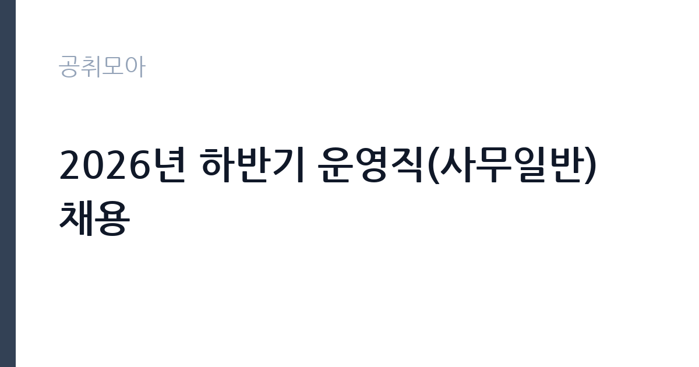

[공공기관] 2026년 하반기 운영직(사무일반) 채용
축산물품질평가원 · 세종 · 마감 2026-10-07 (D-15) · 출처 나라일터

한눈에 보는 모집 조건
| 기관 | 축산물품질평가원 |
|---|---|
| 공고명 | 2026년 하반기 운영직(사무일반) 채용 |
| 고용형태 | 정규직 |
| 근무지 | 세종 |
| 게시일 | 2026-09-22 |
| 마감일 | 2026-10-07 (D-15) |
지원자격, 이렇게 읽으세요
- 운영직(다급) 1명
- 접수 ~2026-10-07 마감
- 세부 조건은 원문 공고문 확인
모집 분야는 운영직 사무일반으로, 자격요건의 세부 내용은 공고문에서 확인하셔야 합니다. 사무일반 직무이므로 문서 작성과 행정 지원 역량이 핵심이 될 가능성이 큽니다. 무기계약직 채용이므로 결격사유와 제출서류는 평가원 공고문의 기준에 따릅니다. 온라인 접수로 진행되니 지원페이지의 입력 항목을 미리 살펴보시기 바랍니다. 사무일반 직무는 특정 자격증보다 행정 실무 경험과 OA 활용 능력이 중요합니다. 관련 경력이 있다면 경력기술서에 구체적으로 정리하시기 바랍니다.
이 공고의 포인트
첫 번째 포인트는 무기계약직이라는 점입니다. 기간제가 아닌 정년까지 보장되는 자리라 장기적인 경력 설계가 가능합니다. 두 번째로 축산물품질평가원은 축산물의 등급 판정과 유통 정보 조사를 맡는 특화 기관으로, 해당 분야의 전문성을 쌓을 수 있습니다. 세 번째로 세종 근무라 정부세종청사 인근의 공공기관 타운에서 일하게 됩니다. 사무직 안정성을 찾는 분께 적합한 공고입니다.
전형은 어떻게 진행되나
전형은 서류전형과 면접전형으로 진행되는 것이 일반적이며, 세부 일정은 원문 공고에서 확인하시기 바랍니다. 응시방법은 온라인 지원페이지를 통한 접수로, 마감일에는 접속이 몰릴 수 있으니 미리 접수하시기 바랍니다. 접수 기간이 약 2주로 여유가 있으나, 자기소개서 작성에 시간을 들이시기 바랍니다.
원문에서 확인한 전형 방식
○ 모집분야 : 운영직(사무일반) ○ 선발직급 : 다급 ○ 고용형태 : 무기계약직 ○ 자격요건 : 공고문 참조 ○ 접수기간 : 2026년 9월 22일 ~ 2026년 10월 7일 ○ 응시방법 : 온라인 지원페이지를 통한 접수(ekape.careerlink.kr) ○ 문의처 : 044-410-7208
이런 분께 추천해요
- 세종에서 무기계약직 사무직으로 안정적으로 일하고 싶으신 분
- 축산·식품·유통 분야 공공기관에 관심 있으신 분
- 행정 지원과 문서 작성 역량을 갖춘 구직자
지원 전 체크리스트
- 사무일반 분야의 자격요건을 공고문에서 확인했습니다
- 온라인 지원페이지의 입력 항목을 미리 살펴보았습니다
- 자기소개서와 증빙서류를 준비했습니다
- 원문 공고문의 마감일 10월 7일을 확인했습니다
모집 일정과 제출 타이밍
접수 기간은 2026년 9월 22일부터 10월 7일까지 약 2주간입니다. 온라인 접수라 마감일 자정 전후의 기준을 확인하시기 바랍니다. 서류 합격자 발표와 면접 일정은 평가원 안내에 따르시기 바랍니다. 추석 연휴가 포함될 수 있으니 연휴 전에 지원서를 완성해 두시기 바랍니다. 온라인 접수 시스템의 입력 항목을 미리 확인하고 증빙 파일을 준비해 두시면 마감일에 여유 있게 접수하실 수 있습니다.
직무 이해하기: 공공기관
운영직 사무일반은 평가원의 행정과 사업 지원 업무를 맡습니다. 문서 작성과 예산·회계 보조, 회의 운영 지원, 민원 응대 등이 주요 업무입니다. 축산물품질평가원은 축산물 등급판정과 축산유통정보 조사, DNA 동일성 검사 등을 수행하는 기관으로, 세종에서 근무합니다. 공공기관 카테고리 공고입니다.
자기소개서 작성 팁
자기소개서에서는 사무행정 경험과 문서 작성 역량을 구체적으로 기술하시기 바랍니다. 다뤄본 업무 시스템과 협업 경험을 사례와 함께 제시하면 좋습니다. 축산업과 식품안전 분야에 대한 관심을 진정성 있게 서술하시기 바랍니다.
면접 준비 포인트
면접에서는 사무 실무 능력과 조직 적응력을 질문받을 가능성이 큽니다. 이전 직장에서 맡았던 행정 업무를 구체적으로 답변할 수 있도록 정리해 두시기 바랍니다. 세종 근무와 무기계약직에 대한 수용 의사를 명확히 하시기 바랍니다.
급여·근무조건 읽는 법
보수 수준은 원문 공고문에서 확인하셔야 합니다. 평가원 운영직 다급의 급여는 기관 보수규정에 따른 직급·호봉 테이블이 적용됩니다. 알리오 경영공시에서 기관의 평균보수를 참고하실 수는 있으나, 개인의 초임과는 차이가 있으므로 원문을 기준으로 판단하시기 바랍니다. 수당과 복리후생의 세부 항목도 원문에서 함께 살펴보시기 바랍니다.
자주 묻는 질문
- 운영직 다급은 어떤 직급입니까
평가원 내 운영직(무기계약직)의 직급 체계 중 다급에 해당하는 자리입니다. 세부 직급과 승급 조건은 원문과 기관 규정에 따르시기 바랍니다. - 접수는 어떻게 합니까
온라인 지원페이지(ekape.careerlink.kr)를 통해 접수합니다. 마감일 접속 지연에 대비해 미리 접수하시기 바랍니다. - 근무지는 어디입니까
축산물품질평가원이 위치한 세종에서 근무하게 됩니다. 세부 근무 부서는 임용 시 안내받으시게 됩니다.
함께 보면 좋은 공고
[공공기관] 한국연구재단 PM(기초연구본부장) 초빙 재공고 — 마감 2026-10-13[공공기관] 칠곡경북대학교병원 2026년 9월 5차 임시직원 채용공고(물리치료사, 간호사, 주차, 조경관리) — 마감 2026-09-28[공공기관] [KDI국제정책대학원] 2026년 제10차 인턴직원 채용(경영기획) — 마감 2026-10-08출처: 나라일터 공개정보를 바탕으로 공취모아가 정리한 안내글입니다. 모집 조건·일정은 변경될 수 있으니 지원 전 반드시 원문 공고문을 확인하세요. 본 글은 정보 제공용이며 합격을 보장하지 않습니다.